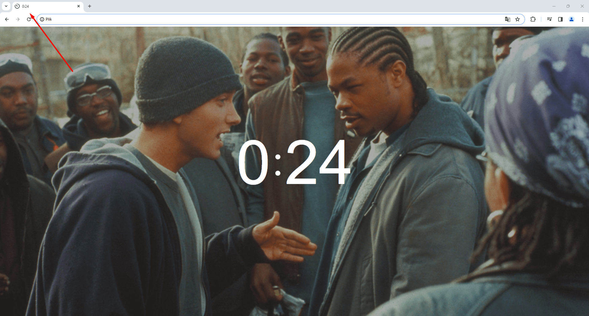
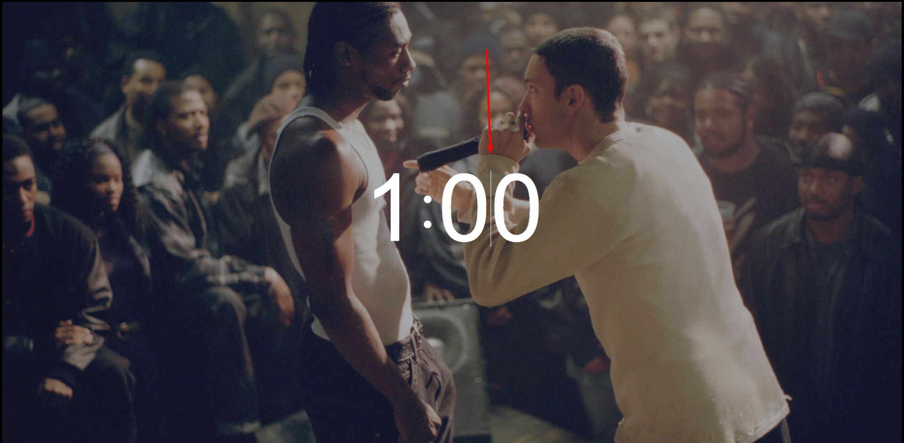
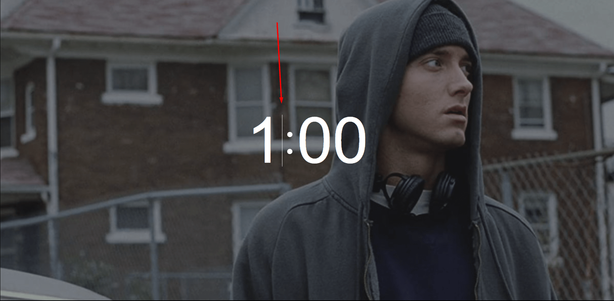

Potrzebowałem timera, żeby kiedy ja długo pracuję przy komputerze przypominałby mi o tym, że trzeba zrobić przerwę lub ćwieczenia dla oczy. Potrzebowałem również timera, który uruchamiałby się w przeglądarce.
Ja zacząłem szukać w internecie.
I to co ja znajdowałem mi się nie podobało.
Dlatego postanowiłem napisać samemu.
Napisać timer, który:
- Będzie bez reklamy.
- Dobrze wygląda.
-
I mi była potrzebna tylko jedna funkcja - ustawić czas i uruchomić,
i zeby oprócz wyświetlania czasu nie było żadnych innych elementów interfejsu,
które zajmowałyby miejsce na stronie timera.
Ponieważ z reguły timery, na które się natknąłem, miały wiele różnych funkcji. W związku z tym dla każdej funkcji tworzyły się elementy interfejsu. I wokół wyświetlacza czasu znajdowały się jeszce różne przyciski, pola wejściowe itp. Dla mnie to tylko przeciążało interfejs. Chciałem, aby był minimalizm.
I tak - mój timer!
-
1. Jako tło użytkownik może użyć dowolnego obrazku.
Na przykład: Tutaj ja wziąłem kadry z filmu "8 Mila".
Obrazy losowo zmieniają się.
Podczas zmiany odbywa się animacja płynnego przejścia. - 2. Karta przeglądarki pokazuje, ile godzin i minut pozostało. 
-
3. Również ja jeszcze zrobiłem skróty klawiszowe:
- Enter - Urochomić.
- Пробел - Urochomić/Zatrzymać.
- ↓ - Ustawia kursor w polu wprowadzania, w którym wyświetlane są minuty. 
- ↑ - Umieszcza kursor w polu wprowadzania, w którym znajdują się godziny. 
- →← Przesuwa kursor w lewo/prawo, gdy pola wprowadzania mają fokus.
-
4.Walidacja:
- 4.1 W polach wprowadzania nie można wprowadzać lite.
-
4.2 Jeśli użytkownik wpisze liczbę mniejszą niż 10 w minutach,
na przykład 2, wtedy na początek zostanie dodane 0, więc będzie 02. -
4.3 A jeśli pozostawi pole wejściowe puste (""),
wówczas w polu godzin zostanie wstawione 0, a w polu minut 00.